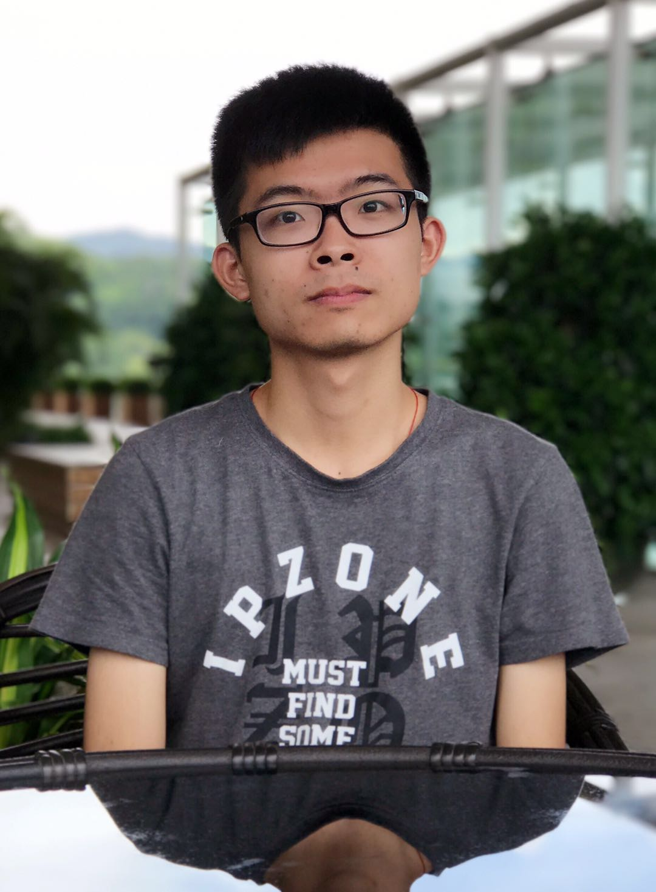

Junjie ChenM.Phil. CandidateDepartment of Computer Science, Hong Kong Baptist University Research Intern |
 |
Currently, I am a second-year (2018-2019) Master of Philosophy candidate from Department of Computer Science, Hong Kong Baptist University (HKBU). My supervisor is Prof. William K. Cheung. Prior to that, I received my B.Eng. degree from Department of Computer Science, Jinan University (JNU) in 2016.
During September to December 2018, I was a research intern at RIKEN Center for Advanced Intelligence Project, Tokyo, working on discrete optimization with Dr. Takanori Maehara.
I am interested in machine learning and discrete optimization. I much more like those papers with mathematical proof.
| AAAI Travel Scholarship, 2019 |
| Research Performance Award, 2018 |
| Excellent Teaching Assistant Performance Award, 2018 |
| Full Postgraduate Studentship for M.Phil. Program, 2017~2019 |
| National Scholarship, 2013~2015 |